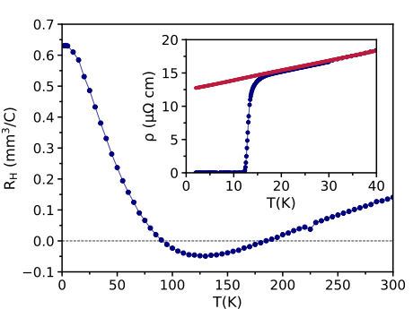
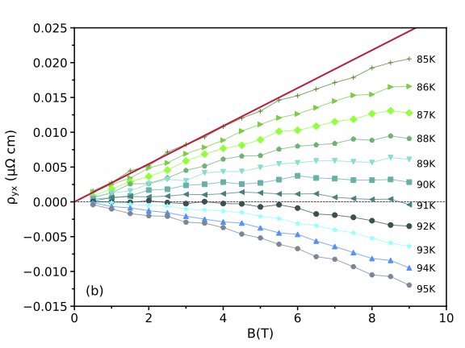
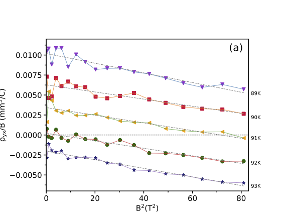
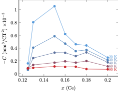

Device Fabrication • Electrical Transport • Quantum Materials
Hall-Bar Devices & Nonlinear Hall Transport
From fabrication of Hall-bar devices to low-temperature magnetotransport measurements and the study of nonlinear Hall response in electron-doped cuprate thin films.
Project Overview
Connecting device fabrication to electronic transport
Hall measurements provide one of the most direct experimental probes of charge transport in a material. By measuring both longitudinal and transverse voltage responses in a patterned device, it is possible to investigate resistivity, carrier type, carrier density, mobility, and more complex transport behavior.
During my research, I fabricated Hall-bar structures from superconducting thin films and used them for magnetotransport measurements over a range of temperatures and magnetic fields. The project combined lithography, thin-film processing, device preparation, cryogenic measurements, and transport analysis.
Device Design
Why use a Hall-bar geometry?
A Hall bar separates the electrical response into longitudinal and transverse components. Current is passed through the device, while voltage probes positioned along and across the current path allow the two resistivity components to be measured independently.
The longitudinal response gives ρxx, while transverse voltage probes provide ρyx. Measuring both quantities as functions of temperature and magnetic field provides a much richer picture of electronic transport than a simple two-terminal resistance measurement.
Four-probe transport measurements
In a four-probe measurement, current is supplied through one pair of contacts while voltage is measured using a separate pair. Because negligible current flows through the voltage-measurement circuit, contributions from lead and contact resistance are strongly reduced.
The six-contact Hall-bar devices used in this work extend this principle by providing multiple voltage probes. Longitudinal probes measure the voltage drop along the direction of current flow, while transverse probes measure the Hall voltage perpendicular to the applied current.

With current driven through the device, the longitudinal voltage Vxx is measured along the current path, while the transverse voltage Vxy is measured across the Hall bar. Reversing the magnetic field makes it possible to isolate the antisymmetric Hall contribution from voltage offsets caused by small contact misalignments.
Process-integration connection. The device shown here was also fabricated using a substrate-selective epitaxy strategy, in which the geometry is defined before growth of the functional epitaxial layer. The complete process and its comparison with conventional fabrication are discussed in the Substrate-Selective Epitaxy project →
Fabrication
From epitaxial film to transport device
Fabrication began with superconducting epitaxial thin films. Lithography was used to define the Hall-bar geometry, followed by pattern transfer and device preparation for electrical measurements.
The fabricated device contains a narrow central current channel with transverse and longitudinal voltage probes. Large contact pads provide access to the patterned structure for electrical connection and low-temperature transport measurements.

Comparing fabrication approaches
Because electron-doped cuprate thin films can be sensitive to post-growth processing, I explored different approaches for defining Hall-bar devices. Conventional devices were patterned by photolithography followed by Ar ion milling, with the sample cooled using liquid nitrogen to limit heating during pattern transfer.
As an alternative, I used a substrate-selective epitaxy approach in which the device geometry is defined before growth of the functional epitaxial layer. This minimizes direct post-growth processing of the superconducting film.
Consistent resistivity and Hall-effect measurements across independently fabricated devices provided an important experimental check that the observed transport behavior was intrinsic to the material rather than an artifact of a particular fabrication route.
The development and process integration of this alternative approach are discussed separately in the Substrate-Selective Epitaxy project →
After fabrication, devices were mounted and electrically connected for transport measurements in a Physical Property Measurement System (PPMS).
Hall Effect
From transverse voltage to carrier information
In the simplest single-carrier picture, the Hall resistivity is linear in magnetic field. The slope defines the Hall coefficient, whose sign provides information about the dominant carrier type.
This simple relation works well for many materials, but strongly correlated systems can show considerably richer behavior. Deviations from linearity can contain information that is not visible in the conventional low-field Hall coefficient alone.
A clue in the temperature dependence
In overdoped PCCO with x = 0.18, the Hall coefficient shows a striking temperature dependence. Rather than retaining a single sign, RH crosses zero twice, near 91 K and 180 K. This indicates that the balance between electron-like and hole-like contributions to transport changes strongly with temperature.

The key experimental question: what remains of the Hall response when the ordinary linear Hall coefficient approaches zero?
Nonlinear Transport
When the Hall response is no longer linear
In electron-doped cuprate thin films, the transverse resistivity can develop a measurable nonlinear magnetic-field dependence. Rather than being described only by a term proportional to B, higher-order contributions become important.
The cubic contribution provides an additional experimental quantity that can be followed as a function of temperature and doping. Its behavior becomes particularly interesting near temperatures where the conventional Hall coefficient becomes small or changes sign.
A Hall coefficient close to zero does not imply the absence of mobile charge carriers. Electron-like and hole-like contributions can partially cancel in the linear Hall response while higher-order transport contributions remain measurable.
Revealing the nonlinear contribution
The effect becomes particularly clear near the first Hall-coefficient crossing. As the linear contribution RHB becomes small, the Hall resistivity does not simply collapse toward zero. Instead, a weak but systematic curvature remains in ρyx(B).

The curvature remains negative across this temperature range and can be described, at sufficiently low field, by expanding the Hall resistivity in odd powers of magnetic field:
Near the crossing temperature, the first term becomes small while C remains nonzero. The normally weak B3 contribution is therefore exposed experimentally.
Interpretation
A two-carrier picture
One useful framework for interpreting nonlinear Hall transport is a two-carrier model in which electron-like and hole-like carriers contribute simultaneously to the electrical response.
Starting from the semiclassical Drude description for two carrier populations, longitudinal and transverse transport can be related to the carrier densities and mobilities of the two populations.
In the low-field limit, the Hall resistivity can be expanded in odd powers of magnetic field:
When RH becomes small, the nonlinear terms become much easier to resolve experimentally. The sign and magnitude of the cubic coefficient C therefore provide information that is not contained in the ordinary linear Hall coefficient alone.
Extracting the cubic contribution
The nonlinear contribution can be isolated more directly by dividing the Hall resistivity by magnetic field. Starting from
division by B gives
Plotting ρyx/B as a function of B2 therefore provides a direct way to separate the first two contributions: the intercept at B = 0 gives RH, while the slope gives the cubic coefficient C.

What does the sign of the nonlinear term tell us?
Within a two-carrier description, the sign of the cubic coefficient contains information about the relative electron-like and hole-like carrier populations. For the measured PCCO films, the nonlinear coefficient C is negative.
Within this model, the negative cubic coefficient indicates that the density of electron-like carriers, n, is larger than the density of hole-like carriers, p.
An additional constraint appears at the temperature where the linear Hall coefficient crosses zero. In the two-carrier model, RH = 0 requires
Since the nonlinear Hall response independently indicates n > p, satisfying this condition requires the hole-like carriers to have the larger mobility:
Physical picture. Within the two-carrier interpretation, the transport response can therefore contain a larger population of electron-like carriers while the hole-like carriers remain more mobile. This competition helps explain why the linear Hall coefficient alone does not provide a complete description of the charge transport.
Extending the Study
From one composition to the PCCO doping range
The detailed study of the x = 0.18 composition raised a broader question: is the nonlinear Hall response specific to this doping, or is it a more general feature of electron-doped PCCO?
To address this question, we extended the measurements across Pr2−xCexCuO4±δ thin films with Ce concentrations ranging from x = 0.125 to 0.20, spanning underdoped, optimally doped, and overdoped regimes.
A nonlinear contribution across the phase diagram
Nonlinear Hall resistivity was observed throughout the investigated doping range. The leading cubic coefficient remained negative, while its magnitude evolved strongly with both temperature and doping and became particularly pronounced near optimal doping.
To compare this behavior directly across compositions, the extracted cubic coefficient can be plotted as a function of Ce concentration. Because C remains negative throughout the measured range, the figure below shows −C, so larger positive values correspond to a stronger negative nonlinear Hall contribution.

Key result. The nonlinear Hall response is not restricted to the x = 0.18 composition. Its systematic evolution across doping provides additional evidence for simultaneous electron-like and hole-like contributions to transport across a broad region of the PCCO phase diagram.
Within the same two-carrier framework, the negative cubic contribution is consistent with an electron-like carrier density larger than the hole-like carrier density across the explored compositions. Near the characteristic doping associated with Fermi-surface reconstruction, the Hall-crossing analysis also indicates a higher mobility for the hole-like carriers at selected temperatures.
Broader Context
Why this matters
The Hall effect in cuprate superconductors is closely connected to the evolution of their electronic structure with temperature and doping. Nonlinear transport provides an additional experimental probe of the balance between electron-like and hole-like contributions and of electronic behavior that cannot always be inferred from the linear Hall coefficient alone.
This project also illustrates the complete experimental path from thin-film material and process integration to patterned device, cryogenic measurement, quantitative analysis, and interpretation of the underlying condensed-matter physics.
Research Output
Publications & further reading
This work developed through two related studies: first, a detailed investigation of the nonlinear Hall response in overdoped PCCO at x = 0.18, followed by a systematic study of how the nonlinear contribution evolves across the PCCO doping range.
Physical Review B · 2024
Nonlinear Hall resistivity in the overdoped Pr1.82Ce0.18CuO4+δ electron-doped cuprate
Detailed study of the weak nonlinear Hall response in overdoped PCCO, including extraction of the leading cubic magnetic-field contribution and its interpretation within a two-carrier model.
Read published paper →arXiv Preprint · Submitted to Physical Review B
Doping dependence of the nonlinear Hall resistivity in electron-doped Pr2−xCexCuO4±δ
* Equal contribution
Systematic extension of the nonlinear Hall study across 0.125 ≤ x ≤ 0.20, revealing a negative cubic contribution throughout the investigated doping range and a pronounced doping dependence near optimal doping.
Read preprint →